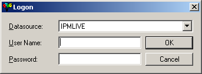
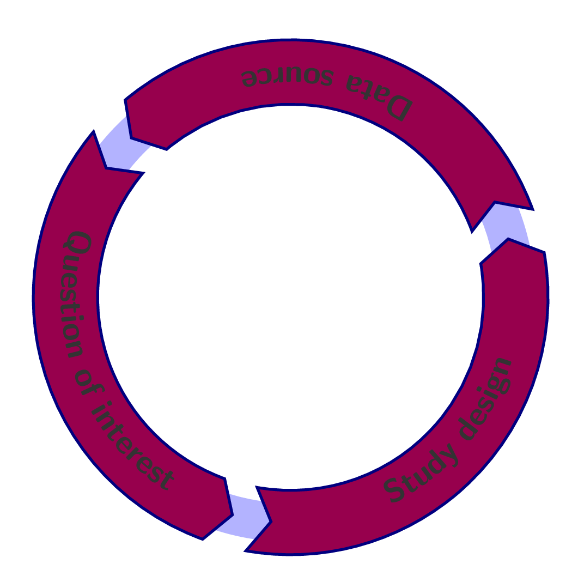

A collection of data/datasets collected for a purpose other than the current study Examples Electronic medical record Administrative databases (insurance claims, PBS, etc.) 
No RCTs available Questionable ethics Time Money No prospective observational data Differences in target populations Lack of 'important' outcomes in RCTs Many look at intermediate outcomes
Validity Direct measurements (i.e. pre-specified) (in the case of the RCT) Randomisation We get balance of confounders Table 1. Characteristics of the patients at baseline. Variable Control Group Intervention Group Sex, n (%) B C Age, year (IQR) D E Current smoking, n (%) F G We'd like to mimic the benefits of an RCT in a retrospective comparative study
Protocol STROBE SPIRIT 'Protocol' is sometimes misconstrued These are always fully-specified for an RCT Inclusion/exclusion criteria Definition of primary and secondary outcomes Analytical considerations These are (generally) easier for RCTs
No different to prospective studies Pre-specified hypotheses (within limits) Specifically: one primary outcome (Obviously) depends on the question of interest Cohort/case-control/interrupted time-series 
A big issue in secondary data studies Data are collected for different purposes Recreating a diagnosis/outcome from patient notes may be challenging Clear classification schemes will help These should be pre-specified
Independent (causal) risk factor, that is also associated with the exposure of interest, but not an intermediate on the causal pathway Randomisation gives balance in measured and unmeasured confounders Confounding by indication E.g. we wish to compare drug A to drug B Drug A is prescribed more than drug B in people who are more ill However, severity of the illness also impacts the outcome
Stratification Compare groups A and B in strata X and Y Regression Compare groups A and B after adjusting for X and Y Matching Compare groups A and B after matching on X and Y
Common for age and sex Break age into 10 year groups Calculate the statistic of interest in each each combination of strata {20-29 y.o. males, 20-29 y.o. females, 30-29 y.o. males, etc.} Combine them in a 'suitable' way E.g. Mantel-Haenszel gives weight to strata with larger sample sizes Good first exploratory step Acts as a check for (multivariable) regression Problems Defining suitable strata Particularly with continuous variables Sparsity in strata E.g. not many 90+ y.o. males
Simultaneous adjustment for all confounders/covariates Present the full model Not just the effect of interest Use the literature to support: Variable specification Model specification
Variable specification Should not be determined by 'univariate' models and p-cutoffs Supported by in-depth literature review Include irrespective of 'statistical significance' at traditional cutoffs This is arbitrary and leads to biased estimates 'Grouped' procedures work well Model specification Specification to meet the outcome: Logistic regression for binary (Yes/No, Dead/Alive) outcomes Poisson regression for counts Cox proportional hazard models for time to event outcomes Multilevel/random effect models for clustered data
Matching Propensities 'Balance' potential confounders Blunt instrument With many confounders it will obviously be difficult Some 'relaxation' may be required E.g. age +/- 10 years, rather than 5 years Specialised methods of analysis then required E.g. conditional logistic regression More sophisticated way of providing balance Model the 'propensity' to receive treatment/exposure A vs. B For analysis, can then use any of the previous Stratification: stratify on the propensity score Regression: Use the propensity score as a weight or as a covariate Matching: match on the propensity score